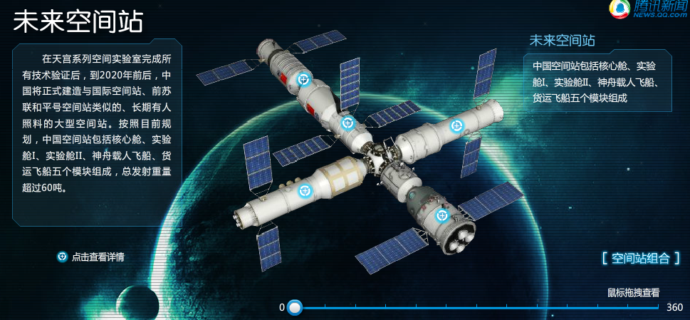
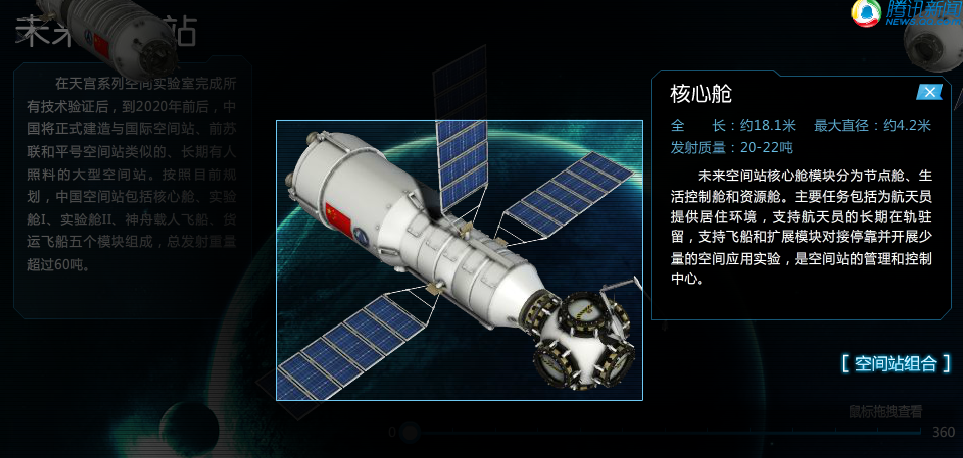
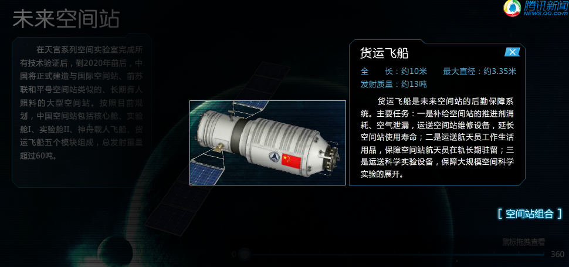
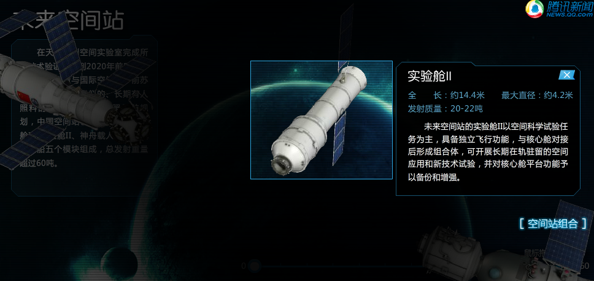
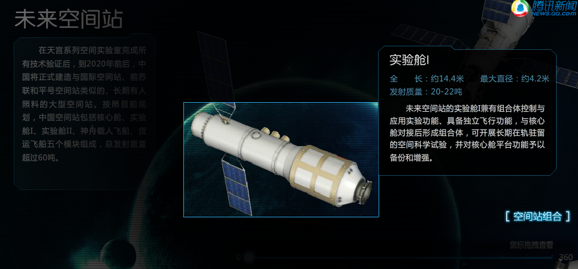
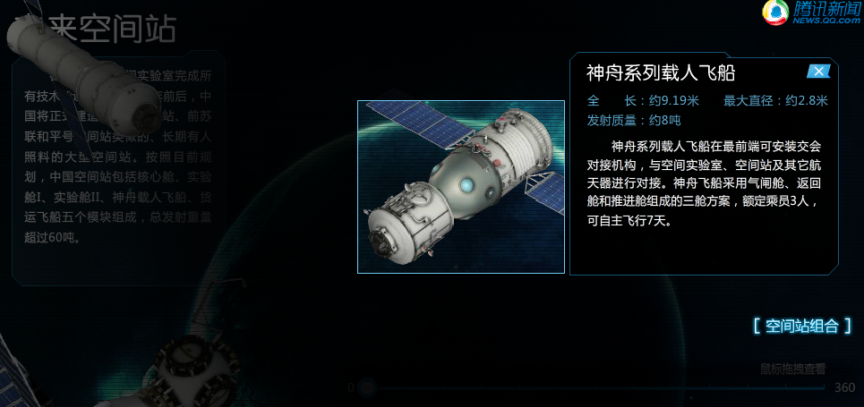

和平号空间站
中国将在2020年左右建成国际空间站
在轨运营10年以上 开展太空实验
全国政协委员、中国载人航天总工程师周建平昨日在京接受专访，立体、深入解码中国将于2020年左右建成的空间站。
整个系统重达90多吨
周建平表示，空间站拟按长期载3人状态设计，运营阶段每半年由载人飞船实施人员轮换，而初期将采用人员间断访问方式。载人空间站建成后，将成为中国空间科学和新技术研究实验的重要基地，在轨运营10年以上。
周建平透露，中国载人航天工程第三步的空间站建设，初期将建造三个舱段，包括一个核心舱和两个实验舱，每个规模20多吨。基本构型为T字形，核心舱居中，实验舱Ⅰ和实验舱Ⅱ分别连接于两侧。
随后，空间站运营期间，最多的时候，将有一艘货运飞船、两艘载人飞船。“整个系统加起来将达90多吨。”周建平说。
中国空间站具备开展能力。在运营阶段，将可以根据科学研究的需要增加新的舱段，扩展规模和应用能力。
他介绍，空间站的一个核心舱和两个实验舱，将由大型运载火箭长征五号B发射；货运飞船和载人飞船则由中型运载火箭长征七号发射。“中国目前设计的货运飞船，在功能、性能上，都处于国际先进水平。”
周建平说，2020年空间站建好后，将随即投入正常运营，开展科学研究和太空实验，促进中国空间科学研究进入世界先进行列，为人类文明发展进步作出贡献。
     {kind=link}
{kind=link}
{kind=link}
{kind=link}
{kind=link}
{kind=link}

带有火箭推进器的救生装置 就是在火箭发射过程出现异常和问题 的时候 逃逸塔上的发动机发动带着返回舱与火箭分离 脱离危险区域
可以类比成火箭弹射座椅的推进火箭，只不过这个是把返回舱整体弹射到安全区域开伞着陆，仅用于地面到低空阶段。 其后将发射货运飞船，与其进行交会对接
神 十发射，神舟飞船总设计师、中国工程院院士戚发轫，在北京航天城看了电视直播。中国载人航天以往任何一次发射，戚老总会亲临现场。不过从去年神九发射起， 戚老就在北京关注神九、神十的发射。戚老在电话里呵呵一笑：“我们在这方面的技术已经很成熟了，在北京关注一下就可以啦！”
是否圆满15天后见分晓
戚老说，中国的交会对接技术，从神八第一次起，就表现得非常好。“神十任务是不是圆满，要等15天后，我们要有点耐心哦。”
戚老说，自1992年起，我国确立了以建立空间站为目标的航天“三步走”计划：第一步就是载人飞船阶段，我们这个阶段应该说通过神五、神六已经圆满完成了。
第 二阶段叫空间实验室阶段。这个阶段为了什么呢？为了建立第三步，就是为了建立空间站做技术准备。哪些技术准备呢？比方说第一是出舱，神七完成了。第二个交 会对接，神八开始做。第三要有物资补给，在这个过程中要有货运飞船；第四还要有再生式生命保障系统。就是你用过的空气、用过的水可以再生，循环使用，否则 的话用不起。这四个大的技术问题解决以后，中国就要建自己的空间站了。
但是要建立空间站，我们现在的能力只有十吨，所以我们飞船就八九吨那样子。空间站大了，需要研制大载重火箭，大的火箭运载能力有二十多吨，将会在海南发射。
戚老说，通过神八到神十的任务，我们解决了交会对接技术。“除交会对接技术外，空间站还需要输送水、空气、食物以及各种仪器设备。现在的飞船运输能力不够，需要研发运输能力较大的货运飞船。货运飞船也具备交会对接功能，但可以是无人的，对接完成后不必返回。”
戚老还表示，空间站工作是长期的，一直依靠地面输送生活保障物资，成本太高，因而需要再生式生命保障技术，比如清洁空气、补充氧气、水的循环使用，以及一些植物等生长。“只有掌握了这些技术，宇航员才能在空间站长期生活和工作。”他说。
两年后发射天宫二号
戚老说，神十是一次载人天地往返运输系统的首次应用性飞行，发射并完成与天宫一号(微博)空间交会对接等任务后，我国载人航天第二步任务的第一阶段将完美收官，全面进入空间实验室和空间站研制阶段。
戚老透露，在完成神舟十号任务后，天宫一号不会再与其他载人飞船对接，但将继续利用天宫一号上的科学实验载荷进行科学实验，也将利用飞行的机会继续考核飞行器的技术，包括产品的可靠性和寿命。
而天宫二号空间实验室将在两年后发射，其后中国将发射货运飞船，与天宫二号进行交会对接。